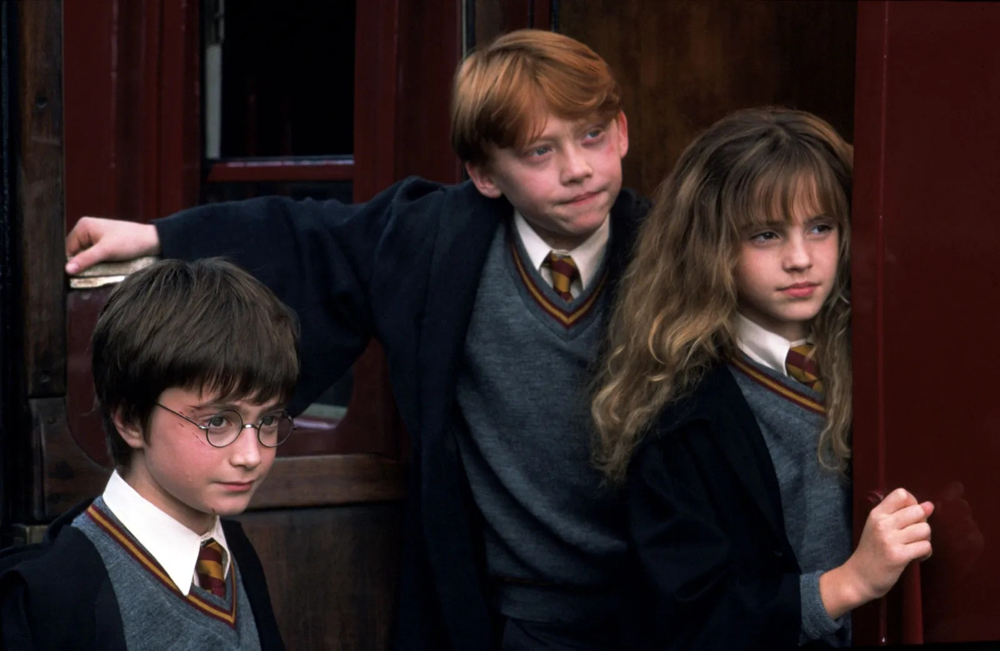

Introduction
"Harry Potter and the Philosopher's Stone" introduces us to the protagonist, Harry Potter, a young wizard who discovers his magical heritage on his eleventh birthday.
1. The Boy Who Lived
The story begins with the revelation of Harry Potter's unusual upbringing with the Dursleys, and the mysterious circumstances surrounding his survival of the Dark Wizard Voldemort's attack as an infant.

2. The Letter from Hogwarts
Harry receives his acceptance letter to Hogwarts School of Witchcraft and Wizardry, despite the Dursleys' attempts to keep him from learning about his magical heritage.

3. The Journey to Hogwarts
Hagrid, the Keeper of Keys and Grounds at Hogwarts, rescues Harry from the Dursleys and takes him to Diagon Alley to shop for school supplies, introducing Harry to the wizarding world.

4. The Sorting Hat
Upon arrival at Hogwarts, Harry is sorted into Gryffindor House along with his new friends Ron Weasley and Hermione Granger, setting the stage for their adventures together.

5. The Forbidden Forest
During detention, Harry and his friends encounter a series of challenges in the Forbidden Forest, where they meet a wounded unicorn and later come face to face with Voldemort himself.

6. The Mirror of Erised
Harry discovers the Mirror of Erised, which shows the viewer their deepest desires. Harry becomes obsessed with seeing his deceased parents in the mirror and spends hours gazing into it.

7. The Philosopher's Stone
Harry learns about the Philosopher's Stone, an object that can grant immortality, and its protection at Hogwarts. He, Ron, and Hermione set out to stop Voldemort from stealing it.

8. The Chess Match
In order to reach the Philosopher's Stone, Harry and his friends must navigate a series of obstacles, including a life-sized chessboard where Ron sacrifices himself to allow Harry and Hermione to continue.

9. The Final Confrontation
Harry faces Voldemort, who has possessed the body of Professor Quirrell, in the chamber protecting the Philosopher's Stone. With the help of the stone's protection and the love of his mother, Harry defeats Voldemort.

10. The House Cup
Despite their heroic efforts, Gryffindor is trailing in the House Cup competition. However, Dumbledore awards last-minute points to Harry, Ron, Hermione, and Neville Longbottom, securing Gryffindor's victory and ending the school year on a high note.

To be continue
These moments set the foundation for the rest of the series, introducing key characters, themes, and conflicts that will continue to unfold in the subsequent books.